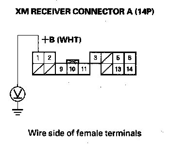
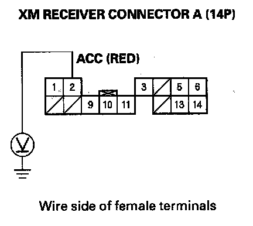
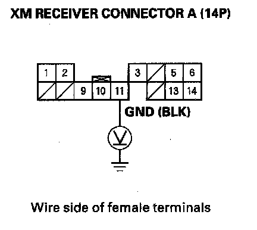

XM Radio Preset Memory Is Lost (Without Acuralink)
XM radio preset memory is lost (without AcuraLink)NOTE:
- Always check the connectors for poor connections or loose terminals.
- If you can only tune to channel 000,001,174, and 247, make sure the audio unit is set to channel mode (see owners manual), if it is set to channel mode, call XM Satellite Radio customer support and check the account activation status.
- If you replace the XM receiver, the AcuraLink must be reactivated by Acura Client Services.
1. Set each of the XM radio channel preset buttons.
Do each of the XM radio channel preset buttons set properly?
YES - Go to step 2.
NO - Go to Step 6.
2. Turn the ignition switch OFF for 1 minute, then turn it back to ON (II).
3. Test all of the XM radio channel preset buttons for proper recall operation.
Do the preset buttons recall the set radio stations?
YES - System is normal at this time. Check connections at the audio unit.
NO - Go to step 4.
4. Turn the ignition switch to LOCK (0).
5. Disconnect XM receiver connector A (14P).

6. Measure the voltage between XM receiver connector A (14P) terminal No. 1 and body ground.
Is there battery voltage?
YES - Go to Step 7.
NO - Repair open in the wire between the under-dash fuse/relay box and XM receiver connector A (14P) terminal No. 1.
7. Turn the ignition switch ON (II).

8. Measure the voltage between XM receiver connector A (14P) terminal No. 2, and body ground individually.
Is there battery voltage?
YES - Go to Step 9.
NO - Repair open in the wire between the under-dash fuse-relay box and XM receiver connector A (14P) terminal No. 2.1
9. Reconnect XM receiver connector A (14P).

10. Measure the voltage between XM receiver connector A (14P) terminal No. 11 and body ground.
Is there less than 0.1 V?
YES - Replace the XM receiver.
NO - Repair open in the wire between XM receiver connector A (14P) terminals No. 11 and body ground (G606).